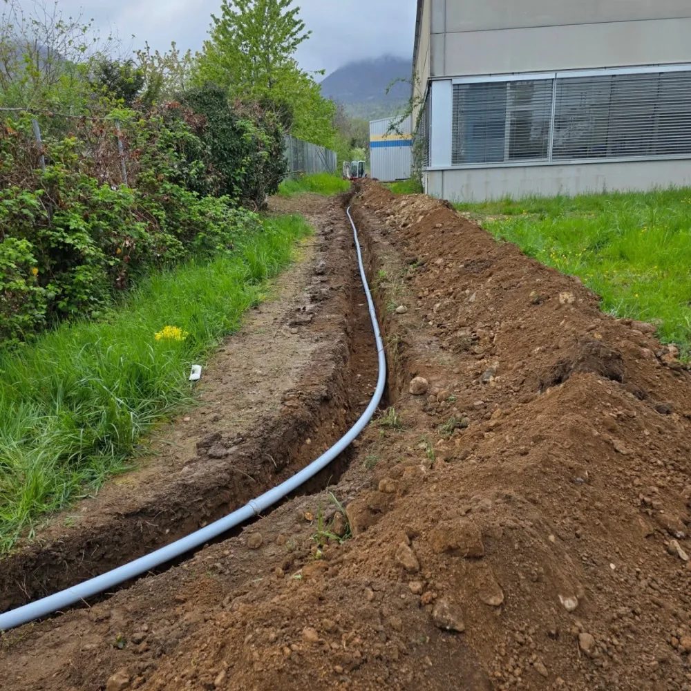

Terrassement & Génie civil — Val de Travers
Etienne Terrassement prend en charge l'ensemble des travaux de terrassement liés aux canalisations : ouverture de tranchées, fouilles, drainage et remise en état. Nous intervenons aussi bien sur des constructions neuves que sur des rénovations ou des mises en conformité.
Grâce à notre parc d'engins adapté et à notre connaissance approfondie des sols du Val de Travers, nous réalisons des travaux précis et durables, quels que soient le type de terrain et les conditions d'accès au chantier.
Notre équipe expérimentée dispose de l'équipement nécessaire pour intervenir sur tous types de terrains, même en conditions difficiles. Nous travaillons dans le respect des normes en vigueur et assurons des travaux fiables et durables, en coordination avec les autres corps de métier présents sur le chantier.

Contactez-nous pour un devis gratuit et sans engagement.
Demander un devis